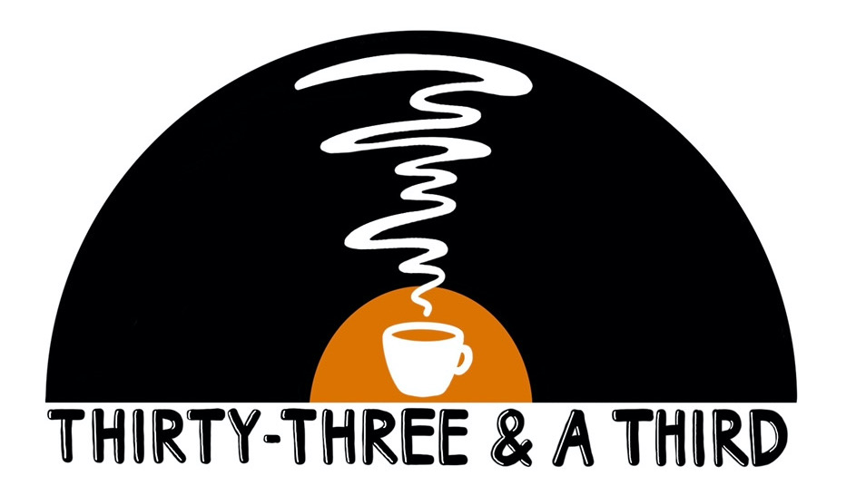
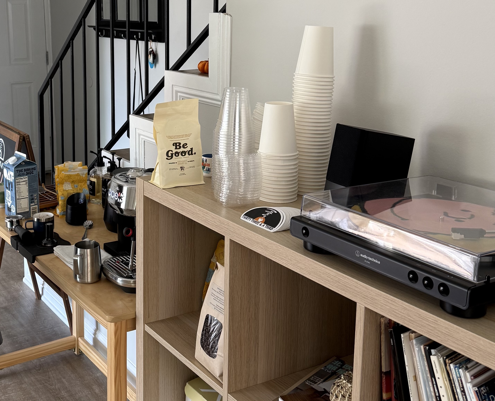
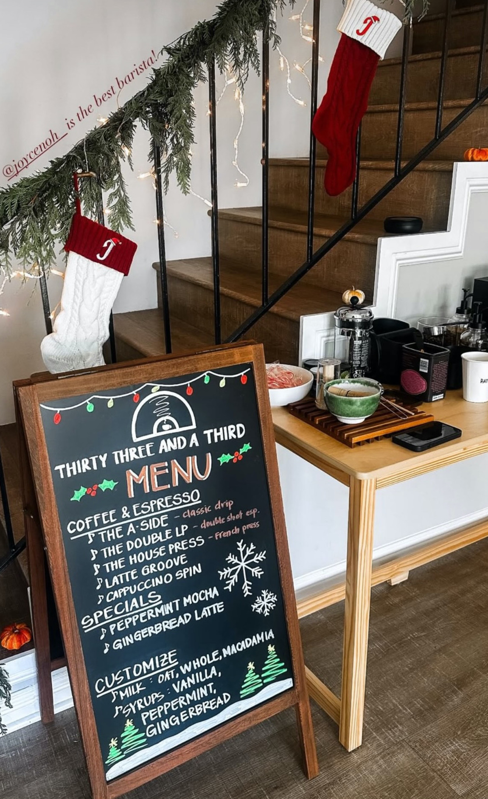
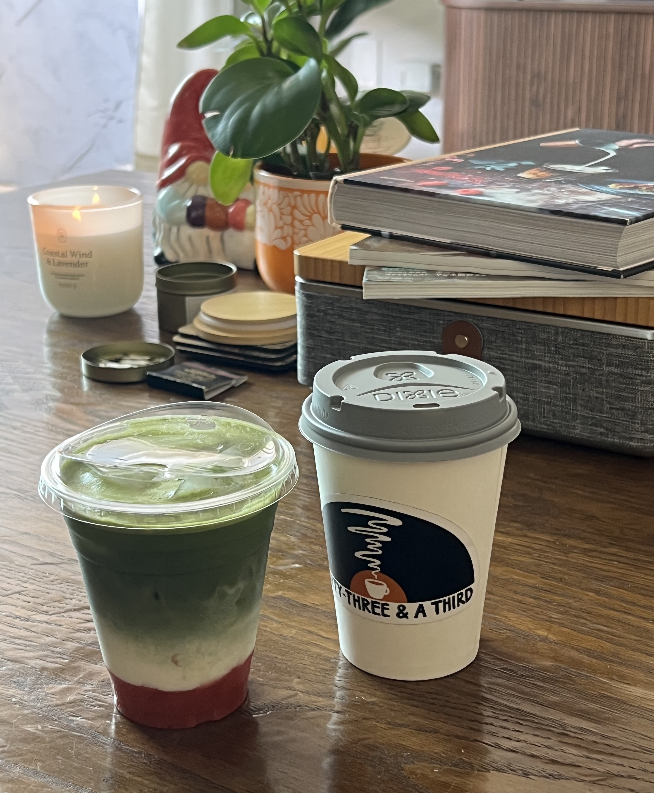

Thirty Three and a Third
A home-cafe series where coffee, matcha, and vinyl bring people together

It started, honestly, with an engineering obsession — and a scale. Before I owned a single machine, I bought the SubMinimal Subscale, and I loved everything about it: the aesthetic, the digital innovation, the sleek look. I always knew I wanted an espresso machine, but those are expensive, so I started small — just to kickstart the momentum and the excitement.
The coffee
Then I fell all the way down the rabbit hole. I started obsessing over everything coffee — my entire Instagram feed became routine videos, setup builds, tips and tricks, machines, everything. And I am an engineer after all: the machine itself, the grinder, the way grind size changes the pull and has to shift for different coffees. I was fully geeking out. Some of my favorite brandsbecame Fellow, La Marzocco, Lelit, and the Rocket Appartamento — these espresso machines are genuine engineering marvels and a real joy to me. The Fellow especially: the DIY, programmable side is like nothing else — you can tune any and every variable exactly how you want. Fellow and the others showed so much thought into engineering the process and the aesthetic whether it be digital or manual.
Eventually I built my own setup: the SubMinimal Subscale, a Fellow Stagg gooseneck kettle, a Breville Bambino Plus espresso machine, a Fellow Opus Conical Burr Grinder (a gift), and a Fellow Atmos Vacuum Canister to keep the beans fresh. That became the official bar.
But the gear alone wouldn't have made me open my home. It came from the whole stack of loves at once: the coffee itself, the creativity of inventing drinks and house-made syrups (my love of cooking, sneaking in), the engineering in every piece of equipment, and the quiet of the routine. And — practically — making my own is so much more delicious and cost-saving than buying out.
The matcha
The same obsession took over matcha. I care about the physics of it: the powder-to-water ratio, the type of powder, the exact water temperature, the method for creating a proper microfoam — and the bowl itself. The shape, size, and texture of the chawan genuinely change the drink. I have two very different ones: one fully glazed, smooth, with a spout; the other glazed only on the lip and outside, so the inside and bottom stay rough. I think the rough one makes better matcha — the texture introduces more air as you whisk. Thinking this hard about form and surface is exactly what pulled me into pottery, which is becoming a real and valued hobby of its own.
The music
And then the records — which I genuinely geek over too. I love the simplicity of the record player, but the science floors me: grooves cut into vinyl, read as vibrations by a needle, turned back into music. That it was discovered and engineered so early is astonishing to me. My partner really introduced me to the breadth of music and we built a collection across every genre for the love of physical media — dropping a needle, flipping a record. My setup is an Audio-Technica AT-LP60X belt-drive turntable paired with a Bose speaker set. The name of the whole thing comes from here: 33⅓, the rpm a standard record spins.

The third space
Inspired by a friend's home-cafe series in Chicago, I wanted to share all of it — the creativity, the ritual, the smells and tastes — with my friends, and to have them bring their friends. Making a new connection gets harder after college, so the whole idea is a third space: somewhere you can gather, meet someone new, or just exist and unwind for a while. I run the bar; my partner runs the music (unless there's a big game on — then the shared love of sports wins).


The menu
Every menu is hand-drawn on a big chalkboard, and the regulars are named for the vinyl theme — The A-Side (classic drip), The Double LP (a double shot), The House Press (French press), plus a Latte Groove and a Cappuccino Spin. Everything's customizable down to the milk and the house syrups.
The signature drinks are where I get to play, and they rotate with the season. The first cafe, in October, ran an earl grey sea salt matcha latte and an apple cider latte; by December they'd turned into a peppermint mocha and a gingerbread latte. New season, new specials — the regulars stay put.
Three cafes in, the best part isn't the coffee or even the records — it's looking up mid-pour and seeing people who didn't know each other an hour ago, talking like they did.
Reflection
Thirty Three and a Third is where a lot of me overlaps at once: the engineer who wants to understand the machine, the cook who wants to invent the drink, the host who wants the room to feel warm. It's taught me that the same instinct behind good product work — sweating the details so the experience feels effortless — is exactly what makes a space feel like somewhere people want to stay.